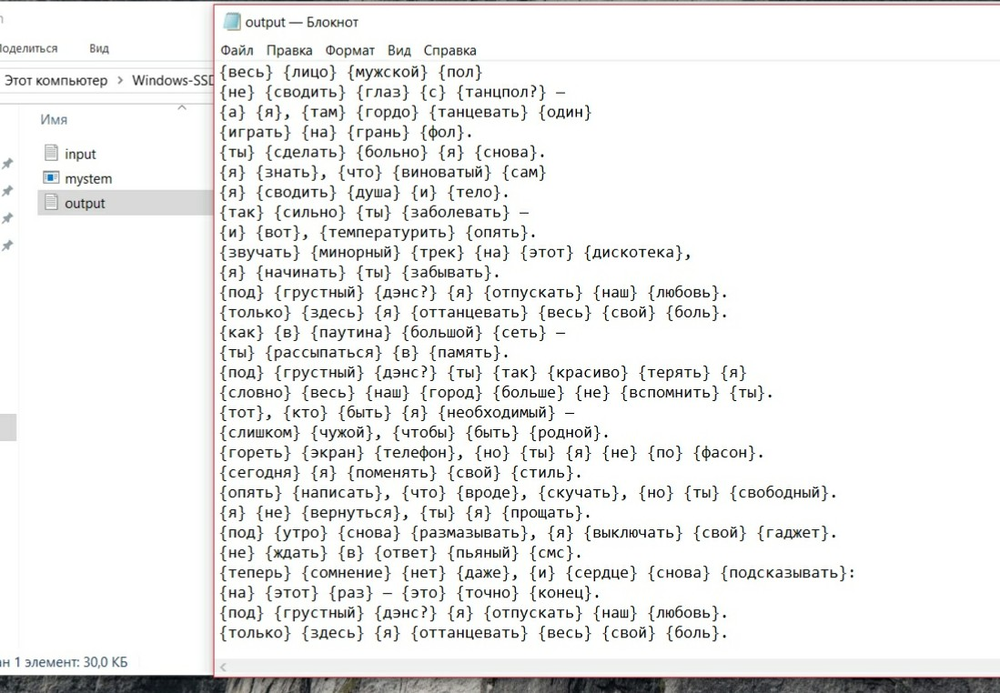
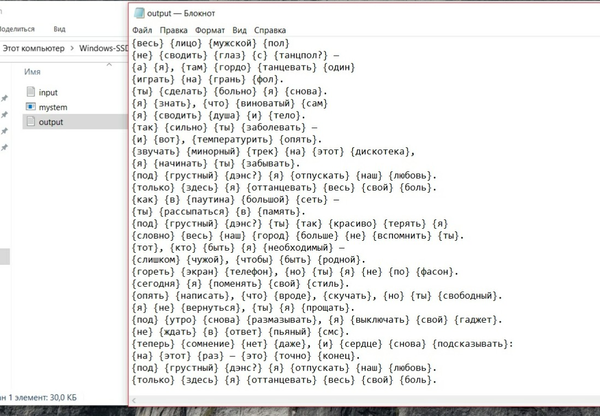
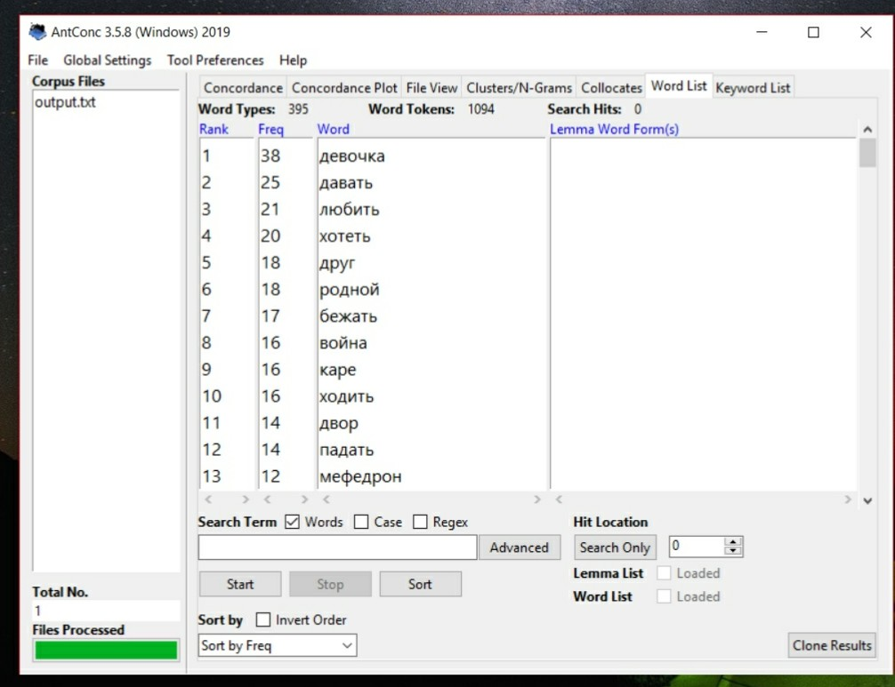
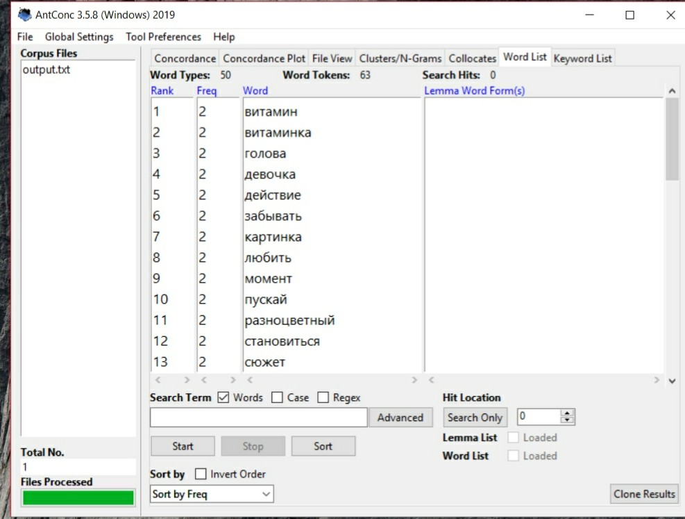
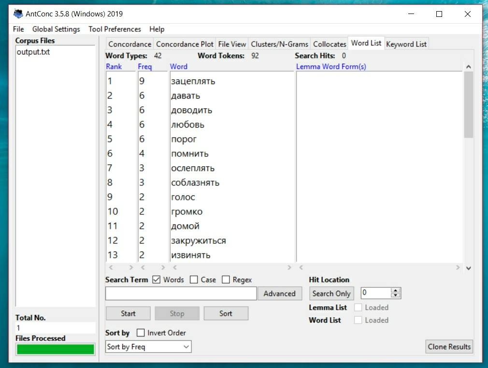
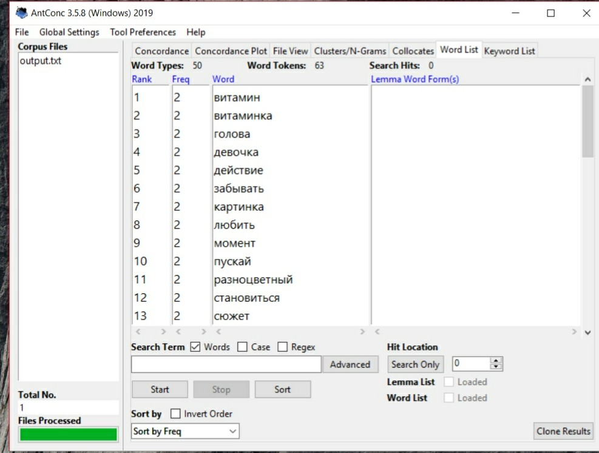
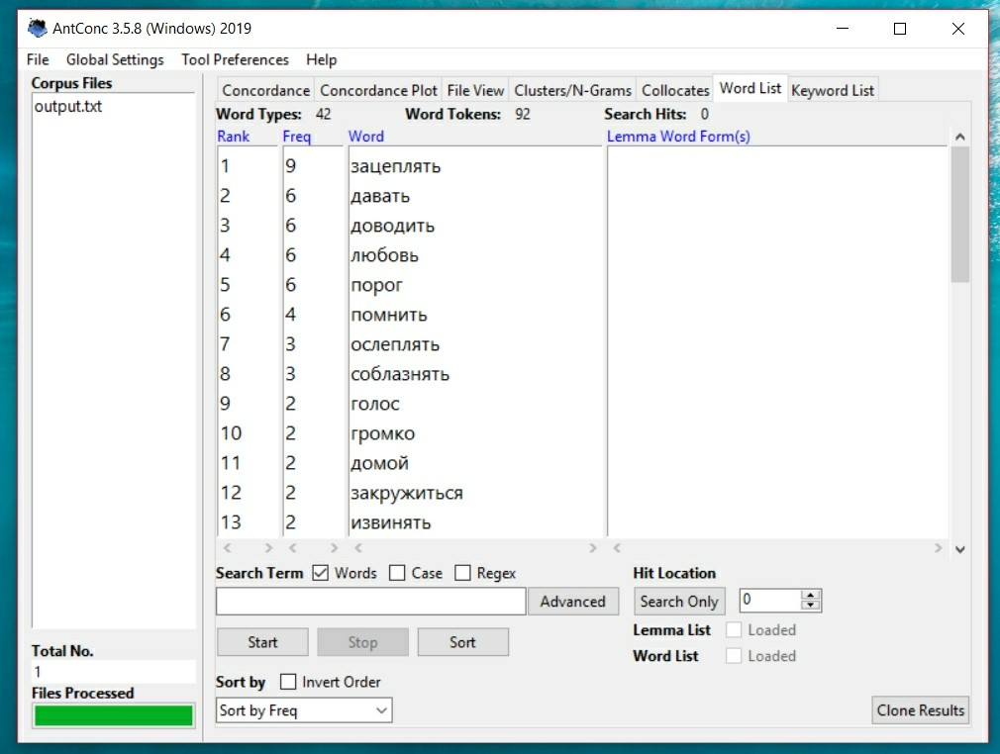

Мы выбрали десять песен из чарта «Вконтакте» и составили из них корпус.Следующим нашим шагом стала лемматизация этих песен с помощью Mystem
 

Все, что получилось мы загрузили в AntConc, а также добавили список стоп-слов(туда вошли предлоги, союзы, междометия и тд.). После этого мы получили список самых употребляемых слов в корпусе

Выявив их, мы поняли, что задача не решена, поскольку есть слова употребляемые только в одной песне, но повторяющиеся очень часто. Как например, слово "мефедрон" в песне "Девочка с каре". И для того, чтобы добиться результата, нам пришлось исследовать каждую песню по отдельности.
 



После этого нам, наконец, удалось вывести список самых используемых слов. Далее мы обратились к НКРЯ, там мы рассматривали графики вхождений этих слов на определенном отрезке времени(2000-2019 гг.)